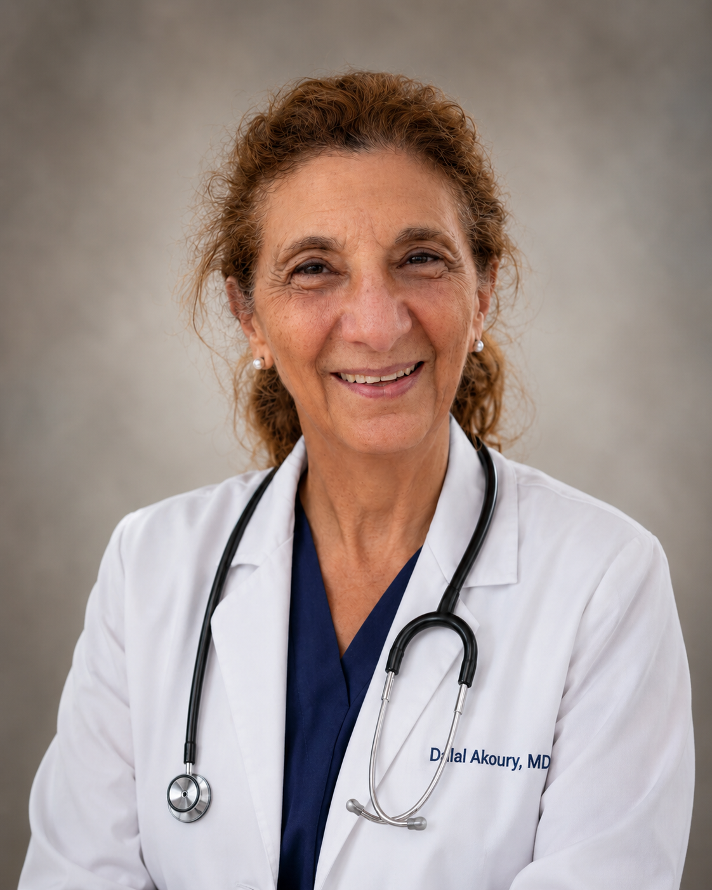

Dr. Dalal Akoury, MD
Founder & Medical Director, AWAREmed Health & Wellness Resource Center, an integrative physician dedicated to whole-person, root-cause medicine.

A Physician Who Listens, And Looks Deeper
Dr. Dalal Akoury, MD is the founder and Medical Director of AWAREmed Health & Wellness Resource Center. With more than 40 years of clinical experience, fellowship training in Pediatric Hematology/Oncology at St. Jude Children's Research Hospital and Emory University, and NIH-funded research in leukemia and PCR diagnostics, Dr. Akoury brings rigorous academic and clinical expertise to every integrative wellness program at our center.
A ten-time international bestselling author and acclaimed global speaker, she has presented at the New York Academy of Medicine, Oxford University, Cambridge's Churchill College, the Royal Society of Medicine, and the London Stock Exchange. Dr. Akoury personally oversees all clinical protocols, ensuring every service is evidence-informed, medically sound, and fully transparent.
Dr. Akoury practices whole-person medicine, addressing body, mind, and spirit together. She integrates conventional understanding with functional, nutritional, hormonal, and preventive approaches, and is known for her warmth, her genuine listening, and care plans that are truly tailored to each individual.
She speaks English, Arabic, French, and Spanish, and welcomes patients from around the world, both in person at her Johnson City, Tennessee office and through virtual consultations.
40+ Years of Clinical Experience
Fellowship at St. Jude Children's Research Hospital, Emory University, and NIH-funded leukemia research
Ten-Time International Bestselling Author
Global speaker at Oxford, Cambridge, Royal Society of Medicine, and New York Academy of Medicine
4 Languages
Consults in English, Arabic, French & Spanish, in person and virtually
Root-Cause Medicine
Four decades looking beyond symptoms to uncover and address underlying contributors to health
A Whole-Person Approach to Medicine
Listen First
Care begins with your full story, including what conventional approaches may have overlooked. Dr. Akoury takes time to hear you completely before making any recommendations.
Root-Cause Focus
Rather than managing symptoms alone, Dr. Akoury explores underlying contributors, hormonal, nutritional, inflammatory, and environmental, to understand why you feel the way you do.
Personalized Plans
Your care plan is built around your biology, history, and goals, not a generic protocol. No two patients receive the same plan, because no two patients are the same.
Clinical Areas of Expertise
Dr. Akoury's integrative expertise spans multiple connected areas of medicine.
Assessments may include evaluation of the following markers based on your individual clinical picture:
Assessments are for educational and wellness support purposes. Not intended to diagnose, treat, cure, or prevent any disease. Individual results vary.
Care in Your Language
Dr. Akoury consults in English, Arabic, French, and Spanish, making world-class integrative medicine accessible to patients from every background.
Meet Dr. Akoury, In Person or Virtually
Begin your whole-person health journey with a personalized consultation with Dr. Dalal Akoury, MD.